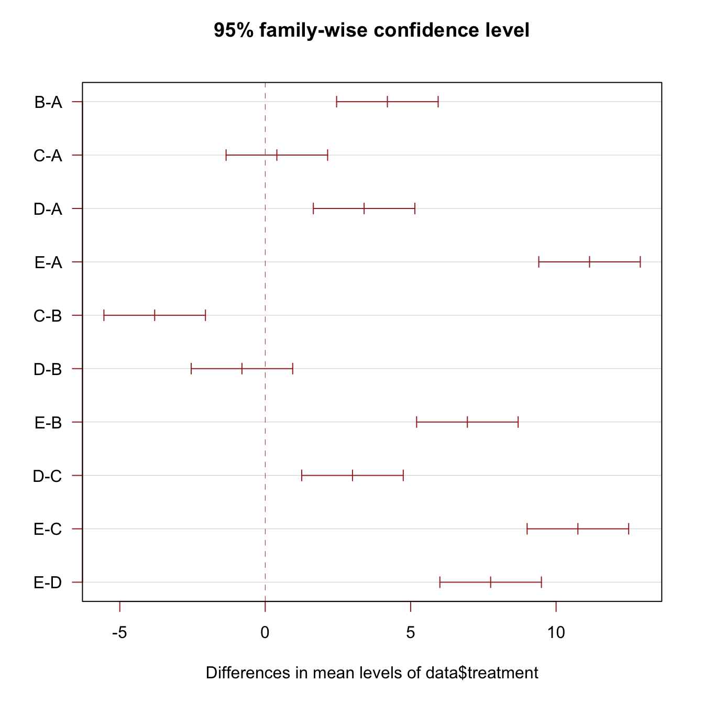
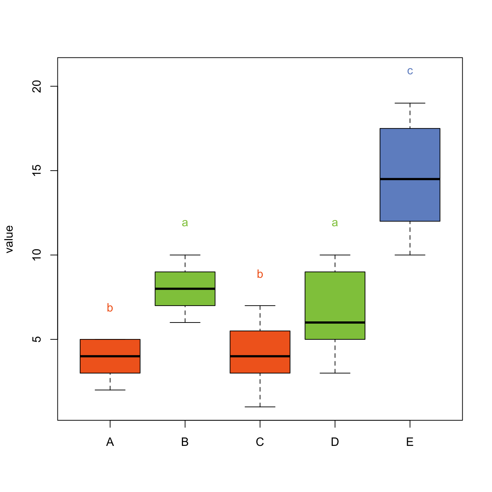

Related chart types

Violin

Density

Histogram

Boxplot

Ridgeline
A Tukey test compares all possible pair of means for a set of categories. This post explains how to perform it in R and host to represent the result on a boxplot.
Tukey test is a single-step multiple comparison procedure and statistical test. It is a post-hoc analysis, what means that it is used in conjunction with an ANOVA.
It allows to find means of a factor that are significantly different from each other, comparing all possible pairs of means with a t-test like method. (Read more for the exact procedure)
In R, the multcompView allows to run the Tukey test
thanks to the TukeyHSD() function. It also offers a
chart that shows the mean difference for each pair of group.

# library
library(multcompView)
# Create data
set.seed(1)
treatment <- rep(c("A", "B", "C", "D", "E"), each=20)
value=c( sample(2:5, 20 , replace=T) , sample(6:10, 20 , replace=T), sample(1:7, 20 , replace=T), sample(3:10, 20 , replace=T) , sample(10:20, 20 , replace=T) )
data=data.frame(treatment,value)
# What is the effect of the treatment on the value ?
model=lm( data$value ~ data$treatment )
ANOVA=aov(model)
# Tukey test to study each pair of treatment :
TUKEY <- TukeyHSD(x=ANOVA, 'data$treatment', conf.level=0.95)
# Tuckey test representation :
plot(TUKEY , las=1 , col="brown")The previous chart showed no significant difference between groups A and C, and between D and B.
It is possible to represent this information in a boxplot. Group A and C are represented using a similar way: same color, and same ‘b’ letter on top. And so on for B-D and for E.

# I need to group the treatments that are not different each other together.
generate_label_df <- function(TUKEY, variable){
# Extract labels and factor levels from Tukey post-hoc
Tukey.levels <- TUKEY[[variable]][,4]
Tukey.labels <- data.frame(multcompLetters(Tukey.levels)['Letters'])
#I need to put the labels in the same order as in the boxplot :
Tukey.labels$treatment=rownames(Tukey.labels)
Tukey.labels=Tukey.labels[order(Tukey.labels$treatment) , ]
return(Tukey.labels)
}
# Apply the function on my dataset
LABELS <- generate_label_df(TUKEY , "data$treatment")
# A panel of colors to draw each group with the same color :
my_colors <- c(
rgb(143,199,74,maxColorValue = 255),
rgb(242,104,34,maxColorValue = 255),
rgb(111,145,202,maxColorValue = 255)
)
# Draw the basic boxplot
a <- boxplot(data$value ~ data$treatment , ylim=c(min(data$value) , 1.1*max(data$value)) , col=my_colors[as.numeric(LABELS[,1])] , ylab="value" , main="")
# I want to write the letter over each box. Over is how high I want to write it.
over <- 0.1*max( a$stats[nrow(a$stats),] )
#Add the labels
text( c(1:nlevels(data$treatment)) , a$stats[nrow(a$stats),]+over , LABELS[,1] , col=my_colors[as.numeric(LABELS[,1])] )
Note: Tukey test is also called: Tukey’s range test / Tukey
method / Tukey’s honest significance test / Tukey’s HSD (honest
significant difference) test / Tukey-Kramer method
Related chart types